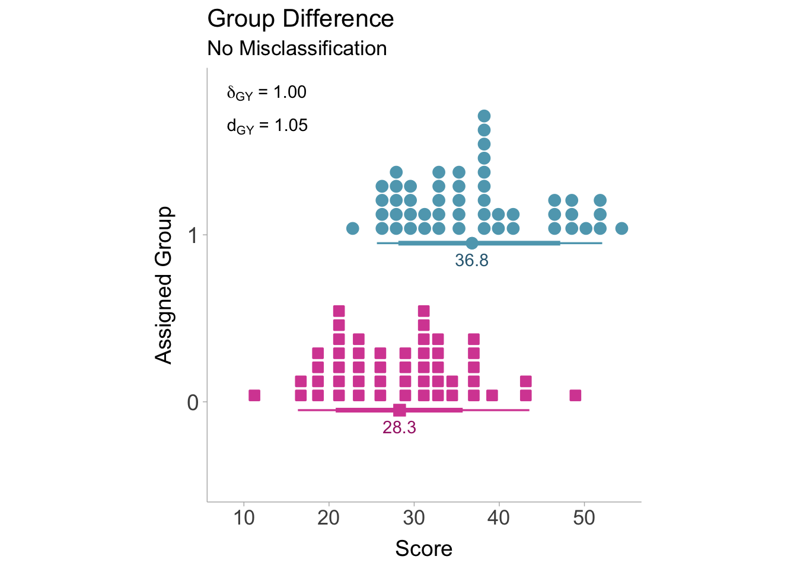
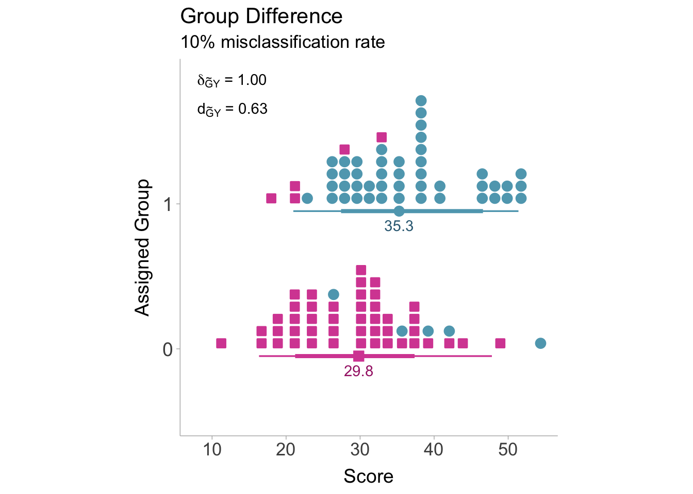

Group misclassification describes a situation where true group membership (e.g., people with a disorder) does not perfectly match the observed group membership (e.g., people diagnosed with a disorder). Group misclassification can be considered a type of measurement error where instead of accounting for errors in continuous variables (i.e., unreliability), group misclassification accounts for errors in categorical variables. This section will be focused on non-differential (random) misclassification.
7.2 Defining Group Misclassification
Misclassification can be defined as any deviations between true group membership and observed group membership. Let us imagine two groups, group 0 and group 1. In order to identify members of group 0 and group 1, we have to rely on some measurement (classification) procedure. We can also suppose that this measurement procedure produces imperfect group assignments, that is, people who are actually in group 0 are sometimes assigned group 1 and vice versa. We can visualize the performance of the classification procedure with a contingency table (see Table 7.1) between actual group membership (\(G\)) and observed group membership (\(\widetilde{G}\)) where each cell is the number of number of individuals in that cell:
Table 7.1: Contingency table between observed and true group membership.
\(G=0\)
\(G=1\)
\(\widetilde{G}=0\)
\(n_{00}\)
\(n_{01}\)
\(\widetilde{G}=1\)
\(n_{10}\)
\(n_{11}\)
We can see from the contingency table that individuals who were correctly classified, would populate the cell blocks \(n_{00}\) or \(n_{11}\) and those who were misclassified would belong to cells \(n_{01}\) and \(n_{10}\). Therefore we can define the proportion of individuals that are accurately classified as \(p_{\text{acc}} = (n_{01} + n_{10})/n\) (\(n\) is the total sample size) whereas the proportion of people misclassified can be defined as \(p_{\text{mis}} = 1-p_\text{acc}=(n_{01} + n_{10})/n\). A high-quality classifier would would minimize \(p_{\text{mis}}\) and maximize \(p_{\text{acc}}\).
7.3 Classification Reliability
Similar to quantifying reliability in continuous variables by calculating the correlation in parallel sets of observed scores, the same can be done in categorical variables. Instead of a contingency table between observed (\(\widetilde{G}\)) and true (\(G\)) group membership, we will instead create a contingency table of two measurements producing two sets of observed group assignments (\(\widetilde{G}\) and \(\widetilde{G}'\), see Table 7.2). An example might be two clinician’s diagnoses of Major Depressive Disorder (MDD) in the same sample of patients.
Table 7.2: Contingency table between two sets of observed group assignments
\(\widetilde{G}'=0\)
\(\widetilde{G}'=1\)
\(\widetilde{G}=0\)
\(n_{00}\)
\(n_{01}\)
\(\widetilde{G}=1\)
\(n_{10}\)
\(n_{11}\)
To obtain the reliability of the group assignments, we can calculate the correlation coefficient between the Bernoulli variables \(\widetilde{G}\) and \(\widetilde{G}'\). A Pearson correlation coefficient between two Bernoulli variables is also referred to as a phi coefficient or Matthews’ correlation coefficient. Let’s denote the reliability as \(\rho_{\widetilde{G}\widetilde{G}'}\). Remember that reliability from the chapter on unreliability can be defined as the square of the correlation between true scores and observed scores. As is the case here, we can define classification reliability as the square of the correlation between assigned group membership and actual group membership,
There are a few ways to obtain a sample estimate of \(\rho_{\widetilde{G}\widetilde{G}'}\). The first way is to calculate the sample estimate directly from the contingency table (Table 7.2),
Where \(n_{AA}\), \(n_{BB}\), \(n_{AB}\), and \(n_{BA}\) are the number of subjects within their respective cells of the contingency table. If the values of the contingency table are not available, we can calculate the reliability from the \(\chi^2\)-statistic,
Where \(n\) is the total sample size (sum of all cells). If the \(\chi^2\)-statistic is unavailable, we can approximate the reliability from the accuracy (\(p_{\text{acc}}\)) or the proportion of people misclassified (\(p_{\text{mis}}\)),
This approximation assumes that the group sizes are approximately equal and the misclassification rates are approximately equal between groups. Otherwise, \(r_{\widetilde{G}\widetilde{G}'}\) will be overestimated (Wiernik and Dahlke 2020).
Classification Reliability in R
The irr package (Gamer et al. 2019) has a data set called diagnoses that consists of 6 raters diagnosing the same thirty patients with various disorders. We will just look at depression for now. First we can construct the contingency table between the first two raters diagnoses of depression (1) vs not depression (0).
library(irr)library(tidyverse)library(psych)data(diagnoses)# get depression diagnoses from first 2 ratersdf <- diagnoses |>mutate(depress1 =as.numeric(rater1 =="1. Depression"),depress2 =as.numeric(rater2 =="1. Depression")) |> dplyr::select(depress1,depress2)# create contingency tablecontingency_table <-table(df)contingency_table
depress2
depress1 0 1
0 17 0
1 6 7
The psych package (William Revelle 2023) has a function phi() for calculating the phi coefficient from a contingency table:
# calculate reliability from phi coefficientphi(contingency_table)
[1] 0.63
Therefore our estimate of the classification reliability is \(r_{\widetilde{G}\widetilde{G}'}=.63\).
7.4 Correcting Standardized Mean Differences (SMD)
7.4.1 Defining our Target Quantity
Our quantity of interest is the true score population standardized mean difference, \(\delta_{GY}\), between actual members of group 0 and group 1 on the true scores of the dependent variable, \(Y\). Non-differential error in the assignment of groups (i.e., group misclassification) will bias the observed correlation. We can model the observed standardized mean difference as a function of the target quantity, \(\delta_{GU}\),
Where \(\alpha\) is the artifact attenuation factor and \(\varepsilon_d\) denotes the sampling error.
7.4.2 Artifact Correction for SMDs
SMDs are attenuated when non-differential misclassification is present. This is partially due to the fact that the means of each group are driven closer to one another. Let us suppose that, on average, group 0 and group 1 score differently on some outcome, \(Y\). When some subjects are erroneously assigned to the incorrect group, the observed mean will be a weighted average of the correct group mean and the incorrect group mean. To calculate the mean of the observed groups we must incorporate the true mean of the correctly classified subjects and the misclassified subjects,
From the above equations, it becomes evident that as the number of misclassified individuals increases (\(n_{01}\) and \(n_{10}\)), the observed means of each group gradually converge towards each other. As the means converge, the standardized mean difference will correspondingly shift toward zero. To illustrate this phenomenon, Figure 7.1 shows the distributions for groups \(A\) and \(B\) without any misclassification. In this case, there is no attenuation of the standardized mean difference.

Figure 7.1: Distributions of scores without misclassification. Red squares denote actual group 0 members, blue circles denote actual group 1 members.
If some individuals are assigned to the incorrect group, then we will see attenuation in the standardized mean difference as the means converge. Figure 7.2 is showing what happens when the group misclassification rate is 10%. A group misclassification rate of 10% is equivalent to a classification reliability of \(r_{\widetilde{G}\widetilde{G}'}=.64\).

Figure 7.2: Distributions of scores with a 10% misclassification rate. Observed standardized mean differences are biased toward the null (i.e., \(\delta\) = 0). Note that a few members of group 0 (red squares) are within assigned group 1 and vice versa (indicative of misclassification).
As described in the chapter on classicla measurement error, some SMD corrections require a three-step procedure: 1) converting to a point-biserial correlation, 2) correcting the correlation, 3) converting back to an SMD. To correct for attenuation induced by non-differential misclassification we first need to convert the observed standardized mean difference to a point-biserial correlation coefficient by using the observed proportion of the sample that has been assigned to either group 0 or group 1 (\(p_\widetilde{G}\)). Let there be misclassification as well as measurement error in the outcome \(\widetilde{Y}\). Let’s converting \(d_{\widetilde{G}\widetilde{Y}}\) to \(r_{\widetilde{G}\widetilde{Y}}\):
We can then correct the point-biserial correlation for group misclassification by dividing by the square root of the classification reliability. Since we also want to correct for measurement error in the continuous dependent variable, we can simultaneously apply an additional correction:
Now we can convert the corrected point-biserial correlation into a corrected standardized mean difference (\(d_{GY}\)). When converting back to a standardized mean difference, we need to use the true group proportions, \(p_G\). Although if we are to assume equal misclassification rates between groups, then the observed proportion can be used \(p_\widetilde{G}\):
This process of converting, correcting, and then back-converting must also be done for the standard error. To avoid redundancy, we can incorporate each step into a single equation:
\[
\mathrm{var}(d_{GY}) = \frac {\mathrm{var}(d_{\widetilde{G}\widetilde{Y}})\times \left(\frac{r_{GU}}{r_{\widetilde{G}\widetilde{Y}}}\right)} {\left(1+d_{\widetilde{G}\widetilde{Y}}^2p_\widetilde{G}(1-p_\widetilde{G})\right)^2\left(d_{\widetilde{G}\widetilde{Y}}^2+\frac{1}{p_\widetilde{G}(1-p_\widetilde{G})}\right)p_G(1-p_G)(1-r_{GY}^2)^3}.
\] This variance formula assumes that the reliability coefficients are known. If raw data is available, it is recommended that a bootstrap (resampling) procedure is used to estimate the sampling variance.
Applied Example in R
A researcher wants to compare the academic performance (measured by a standardized test) of people with and without Major Depressive Disorder (MDD). The researcher reports a classification reliability of \(r_{\widetilde{G}\widetilde{G}'}=.80\) and a reliability of the standardized test as \(r_{\widetilde{Y}\widetilde{Y}'}=.85\). The researcher than finds a standardized mean difference of \(d_{\widetilde{G}\widetilde{Y}}=.30\) favoring controls (i.e., controls had a higher average on the test). Using the correct_d() function in the psychmeta package (Dahlke and Wiernik 2019), we can obtain an unbiased estimate of the target standardized mean difference.
Dahlke, Jeffrey A., and Brenton M. Wiernik. 2019. “Psychmeta: An R Package for Psychometric Meta-Analysis.”Applied Psychological Measurement 43 (5): 415–16. https://doi.org/10.1177/0146621618795933.
Gamer, Matthias, Jim Lemon, Ian Fellows, and Puspendra Singh. 2019. Irr: Various Coefficients of Interrater Reliability and Agreement. https://CRAN.R-project.org/package=irr.
Wiernik, Brenton M., and Jeffrey A. Dahlke. 2020. “Obtaining Unbiased Results in Meta-Analysis: The Importance of Correcting for Statistical Artifacts.”Advances in Methods and Practices in Psychological Science 3 (1): 94–123. https://doi.org/10.1177/2515245919885611.
William Revelle. 2023. Psych: Procedures for Psychological, Psychometric, and Personality Research. Evanston, Illinois: Northwestern University. https://CRAN.R-project.org/package=psych.